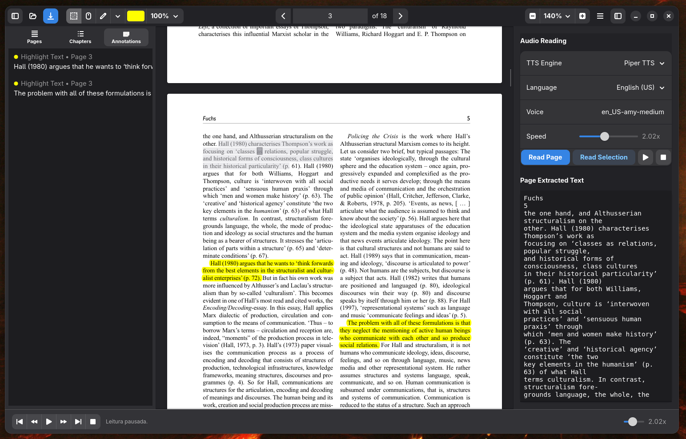
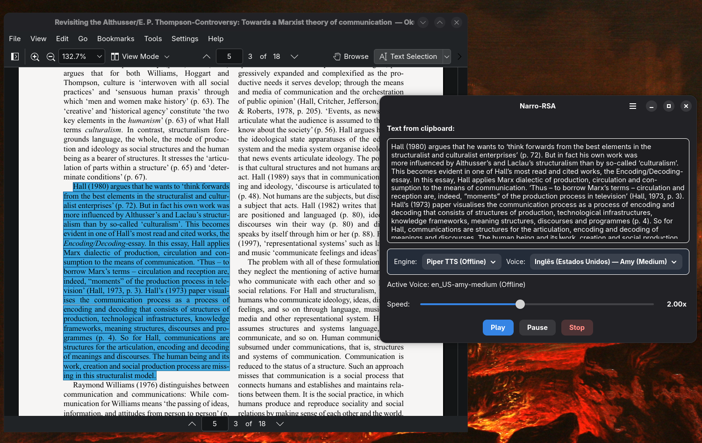
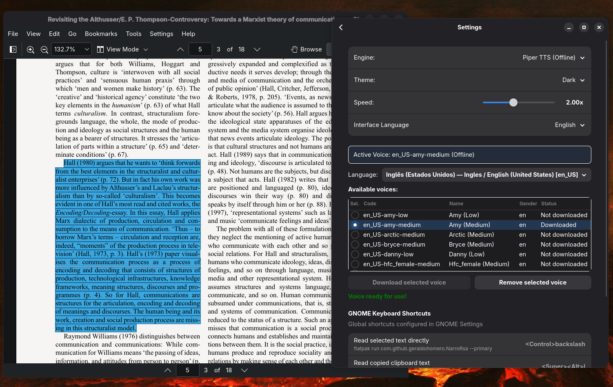

Accessibility & Native Speech Synthesis for Linux
The Narro Organization develops modern, accessible Text-to-Speech (TTS) applications for the GNOME desktop. We turn any text or document into natural speech with real-time visual synchronization, 100% offline neural models, and deep system integration.
NarroPDF
Modern, Minimalist PDF Reader and Annotator with Synchronized Speech Synthesis
NarroPDF is a modern, minimalist, and accessible PDF reader and annotator built in Python using GTK4 and Libadwaita. It combines advanced document viewing, rich text annotation tools, and an integrated Text-to-Speech (TTS) synthesizer with real-time visual synchronization.

Word-by-Word Synchronization
Follow along as you listen. NarroPDF visually highlights each sentence and word in real-time synchronization with neural voice synthesis.
Interactive Playback Controls
Bottom playback bar and right-side panel: play/pause, stop, skip sentence, loop mode, speed adjustment from 0.5x up to 4.0x, and double-click any sentence to start reading immediately.
Annotations & Markups
Highlight, Underline, and Notes with interactive text entry. Resizable handles at selection boundaries, custom opacity palette (10% to 100%), and full Undo/Redo (Ctrl+Z, Ctrl+Shift+Z).
Comprehensive Left Sidebar
Three dedicated tabs: Pages thumbnail list, hierarchical Table of Contents (TOC) with indentation, and consolidated Annotations list with bidirectional synchronization.
Smart Reading & Hand Mode
Smooth Hand Mode (Ctrl+1) with Drag-to-Scroll navigation, automatic hyphenation joining across line breaks, and smart margin/header filtering for natural speech flow.
Safe Exit Protection
Built strictly following GNOME Libadwaita design guidelines with safe exit confirmation to prevent losing unsaved annotations.
Productivity Keyboard Shortcuts
Download NarroPDF
Get the latest Flatpak release package directly from GitHub.
Narro - Read Selection Aloud (RSA)
Universal Text & Clipboard Reader for GNOME/Wayland with Auto-Configured Shortcuts
Narro RSA turns any application on your system into material for listening. Select any text in your browser, terminal, PDF reader, or document, copy it, and use a global keyboard shortcut to launch the native GTK4 player with reading history, speed controls, and offline neural voice downloads.


Universal Reading in Any App
Select text in any application (browser, terminal, editor, chat) and listen immediately. No need to open separate files: a simple hotkey triggers the reading.
Auto-Configured Global Hotkeys
On first launch, Narro RSA automatically registers and activates all global GNOME keyboard shortcuts without requiring manual system setup.
Dynamic Piper Model Downloads
Browse a rich catalog of languages and local neural voices for Piper TTS, monitoring downloads with real-time progress bars right inside the settings window.
Real-Time Speed Control via MPV
Adjust speech playback speed on the fly via high-precision MPV IPC Unix sockets, seamlessly accelerating or slowing down speech.
System Tray Indicator
Optional host AppIndicator running in the notification area to trigger playback, pause, or open preferences with a single click.
Online and Offline Dual Engines
Effortlessly switch between local, privacy-first Piper TTS offline neural voices and expressive Microsoft Edge TTS natural cloud voices.
Global Shortcuts Registered in GNOME
| Action | Default Shortcut | Executed Command |
|---|---|---|
| Read Clipboard | Super + Alt + L | flatpak run com.github.geraldohomero.NarroRsa --play |
| Read Selection Direct | Ctrl + \ | flatpak run com.github.geraldohomero.NarroRsa --primary |
| Pause / Resume | Super + Alt + J | flatpak run com.github.geraldohomero.NarroRsa --pause |
| Stop Playback | Super + Alt + K | flatpak run com.github.geraldohomero.NarroRsa --stop |
Download Narro RSA
Get the latest Flatpak release package directly from GitHub.
What Powers Narro Applications
Built on open standards, respecting your data privacy and the principles of the free software desktop.
Piper TTS — Neural & 100% Offline
Piper is a local, ultra-fast neural text-to-speech synthesizer optimized for consumer hardware. It generates impressively natural speech without sending a single byte over the Internet, guaranteeing total privacy for confidential reading and offline availability while traveling.
Microsoft Edge TTS — Natural Cloud Voices
For users looking for human-like inflection and broad language variety, Edge TTS provides hundreds of expressive neural voices in over 70 languages and dialects with rich prosody and no API cost.
GTK4 & Libadwaita — GNOME HIG
Native desktop interfaces that blend seamlessly into GNOME. Automatic light and dark theme switching, responsive layouts, Cantarell typography, and polished squircle design.
Flatpak & Wayland — Security & Portability
Universal distribution inside a secure sandbox container. Runs consistently across Fedora, Arch Linux, Debian, Ubuntu, openSUSE, and any other modern Linux distribution.
About the Narro Organization
The Narro Organization was founded on the conviction that the Linux desktop deserves Text-to-Speech and accessibility tools that are as elegant, well-integrated, and intuitive as those found on proprietary platforms.
Whether for students reviewing textbooks, researchers parsing academic papers, professionals boosting productivity while multitasking, or people with visual impairments or dyslexia, our mission is to deliver first-class open-source solutions.
“Accessibility is not merely a feature; it is a fundamental right in the free software desktop.”